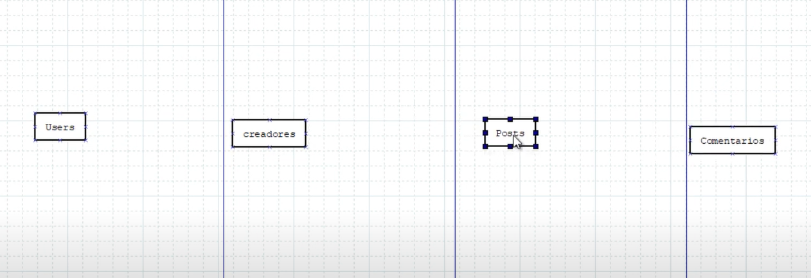
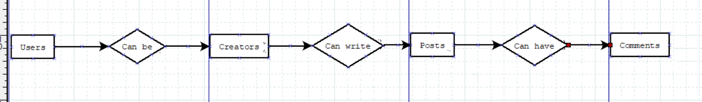
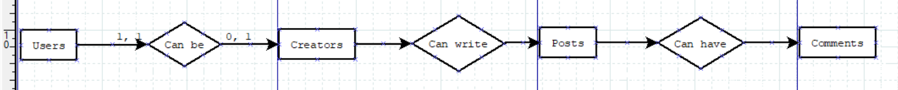
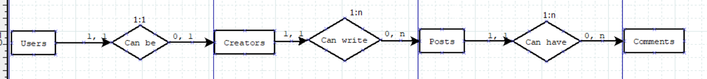
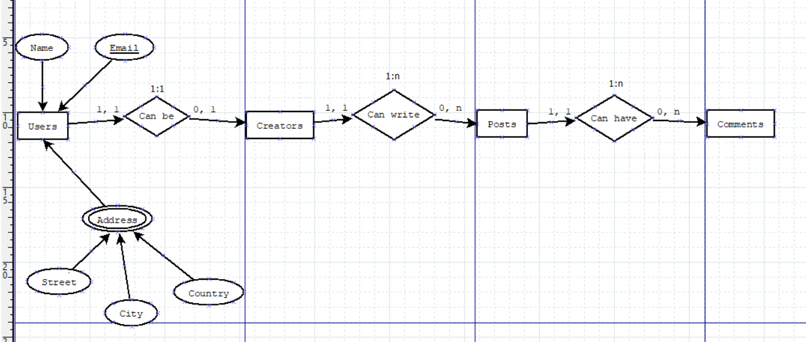
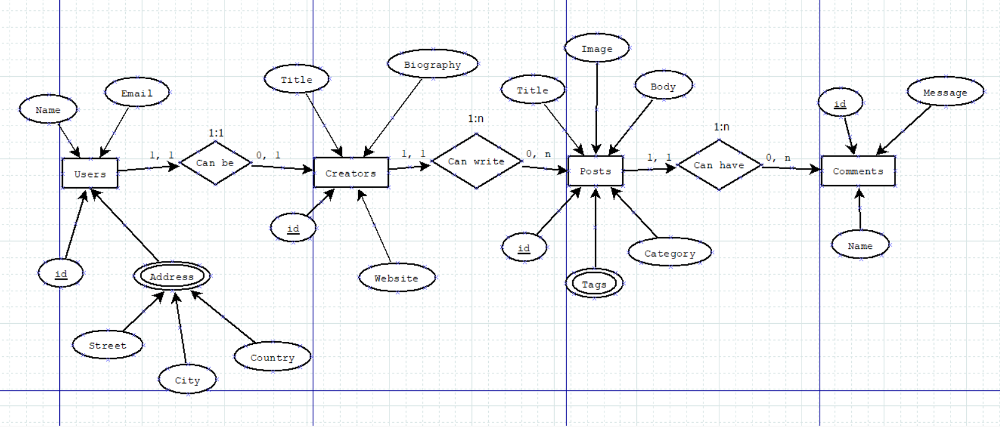

Antes de empezar a diseniar una base de datos relacional debemos tener claro cuales con las reglas del negocio. Las reglas del negocio son todas las funciones que va a tener que cumplir la aplicacion.
En teoria quien disenia las reglas es el cliente, pero en la practica vamos a terminar haciendolo nosotros los programadores, porque muchas veces los usuarios no van a saber que es lo que quieren que haga exactamente la aplicacion y vamos a tener que deducirlo en base a una serie de preguntas.
Aqui hay un ejemplo de reglas de negocio para un sistema de Blog:
Una vez que tenemos claro las reglas de negocio empezamos el disenio de la base de datos, y normalmente para diseniar una base de datos relacional pasamos por tres etapas. La primera de ellas es el Modelo Conceptual.
El modelo conceptual es tomar todas las reglas de negocio y llevarlas a un esquema, pero sin preocuparnos aun por la parte tecnica.
El objetivo del modelo conceptual es mostrar las reglas de negocio de una manera visual y que el cliente lo pueda entender, de modo que si hubiera que modificar algo lo podamos hacer de manera sencilla.
Para lograr esto podemos usar el diagrama entidad-relacion. Que me indica el diagrama entidad-relacion? que dentro de las reglas de negocio debes encontrar entidades (objetos reales o conceptuales) que tengan ciertos atributos.
En el ejemplo anterior de reglas de negocio, tomando los "usuarios" tendriamos una entidad con ciertos atributos (nombre, direccion, correo) y los "creadores" vendria a ser otra entidad con otros atributos (titulo, biografia, website). Lo mismo para "posts" y "comentario".
Una vez hemos identificado las entidades podemos empezar a elaborar el diagrama entidad relacion (ER). El primer paso es colocar todas las entidades (en plural):
Como segundo paso vamos a encontrar las relaciones que existen entre estas entidades y las graficamos. Por ejemplo, un usuario puede ser creador, un creador puede escribir un post, y un post puede tener comentarios:
Ahora vamos a calcular la cardinalidad. Para lograrlo vamos a centrarnos en las relaciones que hemos identificado entre las entidades.
Por ejemplo, en la relacion "Can be" de usuarios a creadores para encontrar la cardinialidad derecha debemos preguntarnos:
Los usuarios como minimo y como maximo cuando perfiles de creadores van a tener? La respuesta es que 0 como minimo porque no todos los usuarios van a ser creadores y 1 como maximo porque cada usuario solo podra tener un perfil de creador. Entonces la cardinalidad derecha es de 0, 1
// Right Cardinality: 0, 1
Users -> <Can be> -> Creators
Ahora para encontrar la cardinalidad izquierda nos preguntamos lo mismo:
Un perfil de creador como minimo y como maximo a cuantos usuarios va a corresponder? 1 como minimo porque un creador es un usuario, y 1 como maximo porque un perfil de creador solo puede corresponder a un solo usuario. Entonces la cardinalidad izquierda es de 1, 1
// Left Cardinality: 1, 1
Users -> <Can be> -> Creators
Hecho esto ya he encontrado la cardinalidad de la relacion:
Ahora voy a encontrar la relacion de cuantos a cuantos entre usuarios y creadores de la base de datos.
Para lograrlo hare uso de la cardinalidad. Tomamos el mayor numero de la cardinalidad izquierda (en este caso 1) y de la derecha (tambien 1) entonces los juntamos asi -> 1:1 y ya hemos encontrado que la relacion de usuarios a creadores es de 1 a 1.
// Right Cardinality: 0, 1
// Left Cardinality: 1, 1
Users -> <(1:1) Can be> -> Creators
Ahora hare lo mismo entre creadores y posts. Pero aqui hay un problema... al hacer la pregunta los post por cuantos creadores pueden ser ecritos? Al parecer no hay ninguna restriccion en las reglas de negocio, asi que debes ir para aclararlo con el cliente y le preguntas si los post pueden ser escritos por multiples autores. Te responde que no, entonces cada post solo puede tener un autor y en lugar de n colocas el numero 1, y la relacion entre las dos entidades es de uno a muchos -> 1:n:
// Right Cardinality: 0, n
// Left Cardinality: 1, 1
Creators -> <(1:n) Can write> -> Posts
Precisamente para estos problemas es que sirve el modelo conceptual... imagina que te lo saltes y tu cliente te diga: "debi haber considerado multiples autores"... va a ser un serio dolor de cabeza reestructurar la base de datos.
Finalmente la relacion entre comentarios y posts:
// Right Cardinality: 0, n
// Left Cardinality: 1, 1
Posts -> <(1:n) Can have> -> Comments
El diagrama de cardinalidades y relaciones quedaria asi:
El siguiente paso del modelo conceptual es agregar a cada entidad los atributos especificados en el modelo de negocio.
Por ejemplo, para los usuarios vamos a almacenar el nombre, el correo, y la direccion. Pero la direccion es un atributo que contiene mas datos (calle, ciudad, pais), por lo que le habilitamos el campo "mutltivalued" (multivaluado) y debajo de el colocamos los datos que contiene.
He elegido el campo email como clave primaria para identificar a cada usuario.
El el campo creadores tenemos tres atributos: titulo, biografia, y website... pero ninguno nos sirve como clave primaria, asi que agregamos una clave primaria "sintetica": el campo id. Laravel siempre trabaja con el campo id asi que vamos a agregarlo en todas las entidades y elegirlo como primary key.
Es muy importante que esto lo tengas bien definido para que el cliente pueda hacer cambios ya que en el siguiente paso vamos a ser mucho mas tecnicos.